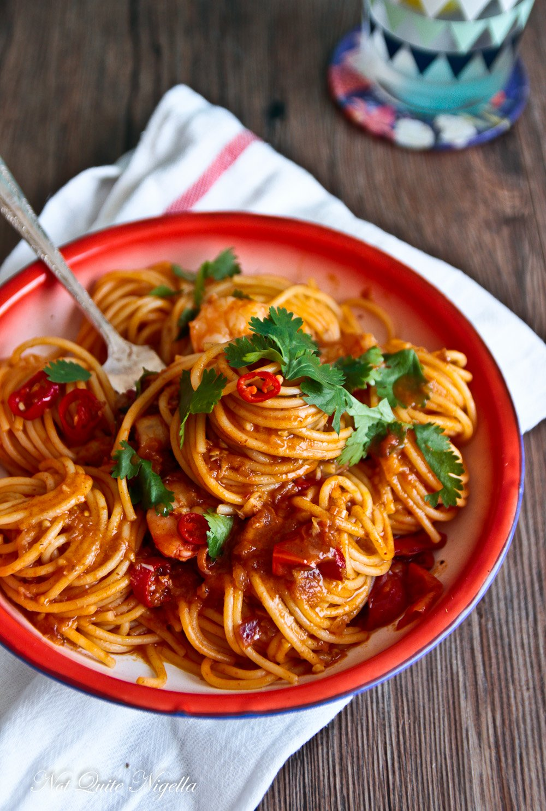

Tom Yum Spaghetti

-
Tom Yum Spaghetti is a true flavor bomb! It's one of the most popular Thai pasta dishes in Thailand. All the iconic tom yum flavours
- lemongrass, lime leaves, chili paste,lime, etc. - go so incredibly well with tomato sauce.
Ingredients
- 1 stalk lemongrass
- 6 slices galangal
- 6 kaffir lime leaves
- 1-3 Thai chilies
- Half a medium onion
- 2 tbsp Thai chili paste
- Fish sauce
- Good quality whole peeled plum tomatoes
- Sheimeji mushrooms
- Medium shrimp
- Spaghetti
- Lime juice
- Chopped cilantro
- Grated parmesan cheese
Instructions
- Cook the pasta in salted water. Set some pasta water aside. Then drain the pasta to be put aside/
- Slice mushrooms, tomatoes, chili, mice shallots and 2 cloves of garlic.
- In a hot pan on high heat, add oil, the shallots with the garlic, and lit it simmer until golden brown. Add the kaffir lime and lemongrass.
- Stir in the BE Tom yam paste and stir-fry until aroma develops.
- Add in the prawns and cook until pink.
- Add the tomato sauce, followed by the mushrooms and tomatoes, the pasta water and lit it simmer 3 minutes.
- When the sauce is ready, add the sliced chili at the very end, stir well then remove from the heat.
- Squeeze half of the lime on the top of the pasta and garnish with chopped coriander leaves.
Thank you for reading.